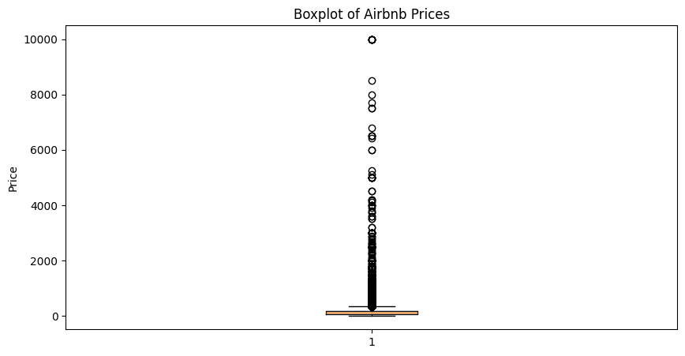
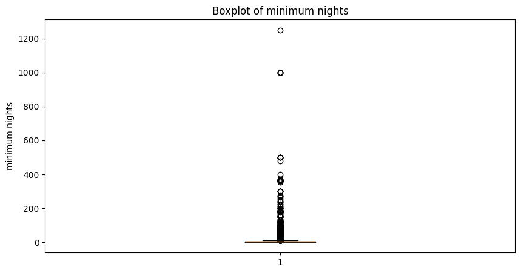
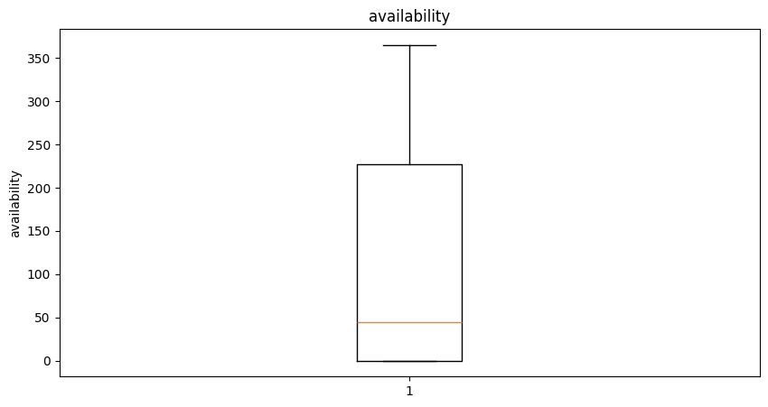
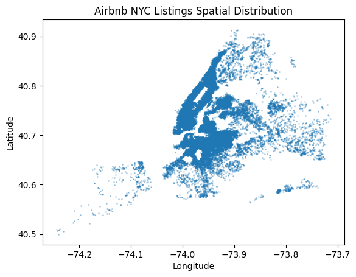
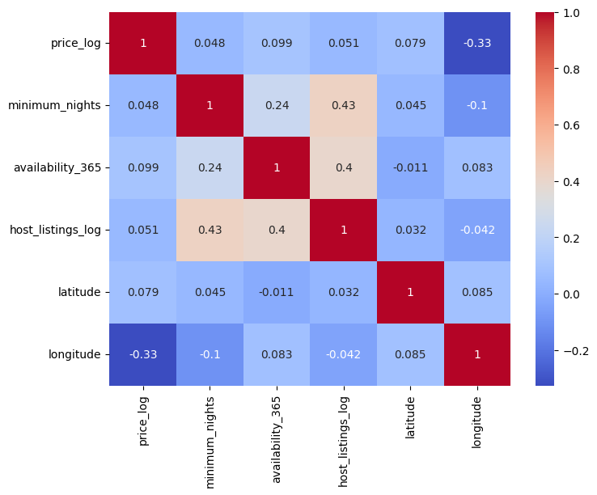
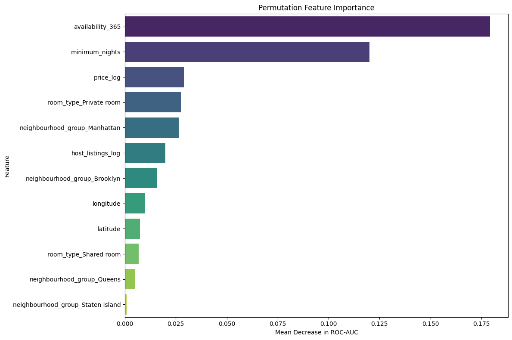
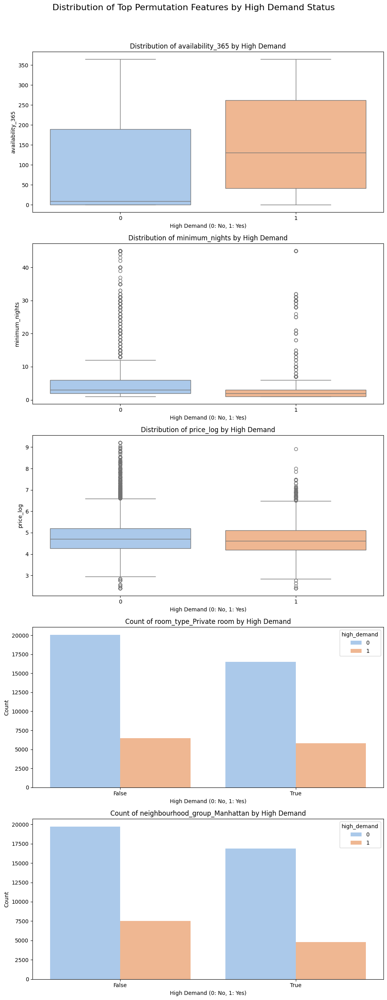

import pandas as pd
import numpy as npThis notebook presents my individual contributions to the data pre-processing and model development tasks undertaken for the Development Team Project, assessed in Unit 6. My colleague’s contributions — the random forest and linear regression models — are clearly marked with “Author: CF”; all other code in this notebook is my own work. Additional comments covering explainations for other team members and flagging points for possible discussion, can be viewed by enabling ‘open comment pane’.
My collaborative contributions, including team leadership and document production, are addressed separately in the reflective essay
# 1. Load and Inspect Datasetdf = pd.read_csv("https://rossbulat.com/data/ab_nyc_2019.csv")df.headpandas.core.generic.NDFrame.head
def head(n: int=5) -> Self
Return the first `n` rows. This function returns the first `n` rows for the object based on position. It is useful for quickly testing if your object has the right type of data in it. For negative values of `n`, this function returns all rows except the last `|n|` rows, equivalent to ``df[:n]``. If n is larger than the number of rows, this function returns all rows. Parameters ---------- n : int, default 5 Number of rows to select. Returns ------- same type as caller The first `n` rows of the caller object. See Also -------- DataFrame.tail: Returns the last `n` rows. Examples -------- >>> df = pd.DataFrame({'animal': ['alligator', 'bee', 'falcon', 'lion', ... 'monkey', 'parrot', 'shark', 'whale', 'zebra']}) >>> df animal 0 alligator 1 bee 2 falcon 3 lion 4 monkey 5 parrot 6 shark 7 whale 8 zebra Viewing the first 5 lines >>> df.head() animal 0 alligator 1 bee 2 falcon 3 lion 4 monkey Viewing the first `n` lines (three in this case) >>> df.head(3) animal 0 alligator 1 bee 2 falcon For negative values of `n` >>> df.head(-3) animal 0 alligator 1 bee 2 falcon 3 lion 4 monkey 5 parrot
df.info() # examine columns and data types; data types are as expected except last review (string cf datetime)
# neighbourhood group, neighbourhood and room type should be made to catagorical value (see later)<class 'pandas.core.frame.DataFrame'>
RangeIndex: 48895 entries, 0 to 48894
Data columns (total 16 columns):
# Column Non-Null Count Dtype
--- ------ -------------- -----
0 id 48895 non-null int64
1 name 48879 non-null object
2 host_id 48895 non-null int64
3 host_name 48874 non-null object
4 neighbourhood_group 48895 non-null object
5 neighbourhood 48895 non-null object
6 latitude 48895 non-null float64
7 longitude 48895 non-null float64
8 room_type 48895 non-null object
9 price 48895 non-null int64
10 minimum_nights 48895 non-null int64
11 number_of_reviews 48895 non-null int64
12 last_review 38843 non-null object
13 reviews_per_month 38843 non-null float64
14 calculated_host_listings_count 48895 non-null int64
15 availability_365 48895 non-null int64
dtypes: float64(3), int64(7), object(6)
memory usage: 6.0+ MBskewness = df.select_dtypes(include=np.number).skew().sort_values(ascending=False)
skewness| 0 | |
|---|---|
| minimum_nights | 21.827275 |
| price | 19.118939 |
| calculated_host_listings_count | 7.933174 |
| number_of_reviews | 3.690635 |
| reviews_per_month | 3.130189 |
| longitude | 1.284210 |
| host_id | 1.206214 |
| availability_365 | 0.763408 |
| latitude | 0.237167 |
| id | -0.090257 |
df.isnull().sum() # a large number of reviews per month are missing, do these correspond to number of reviews = 0 or just missing data?| 0 | |
|---|---|
| id | 0 |
| name | 16 |
| host_id | 0 |
| host_name | 21 |
| neighbourhood_group | 0 |
| neighbourhood | 0 |
| latitude | 0 |
| longitude | 0 |
| room_type | 0 |
| price | 0 |
| minimum_nights | 0 |
| number_of_reviews | 0 |
| last_review | 10052 |
| reviews_per_month | 10052 |
| calculated_host_listings_count | 0 |
| availability_365 | 0 |
# a large number of reviews per month are missing,
#do these correspond to number of reviews = 0 or missing data?missing_reviews = df[df["reviews_per_month"].isnull()]
missing_reviews["number_of_reviews"].value_counts().head(10)| count | |
|---|---|
| number_of_reviews | |
| 0 | 10052 |
#confirms that where reviews_per_month is missing it is because number of reviews = 0;
# therefore replace with 0df["reviews_per_month"] = df["reviews_per_month"].fillna(0)df.describe()| id | host_id | latitude | longitude | price | minimum_nights | number_of_reviews | reviews_per_month | calculated_host_listings_count | availability_365 | |
|---|---|---|---|---|---|---|---|---|---|---|
| count | 4.889500e+04 | 4.889500e+04 | 48895.000000 | 48895.000000 | 48895.000000 | 48895.000000 | 48895.000000 | 48895.000000 | 48895.000000 | 48895.000000 |
| mean | 1.901714e+07 | 6.762001e+07 | 40.728949 | -73.952170 | 152.720687 | 7.029962 | 23.274466 | 1.090910 | 7.143982 | 112.781327 |
| std | 1.098311e+07 | 7.861097e+07 | 0.054530 | 0.046157 | 240.154170 | 20.510550 | 44.550582 | 1.597283 | 32.952519 | 131.622289 |
| min | 2.539000e+03 | 2.438000e+03 | 40.499790 | -74.244420 | 0.000000 | 1.000000 | 0.000000 | 0.000000 | 1.000000 | 0.000000 |
| 25% | 9.471945e+06 | 7.822033e+06 | 40.690100 | -73.983070 | 69.000000 | 1.000000 | 1.000000 | 0.040000 | 1.000000 | 0.000000 |
| 50% | 1.967728e+07 | 3.079382e+07 | 40.723070 | -73.955680 | 106.000000 | 3.000000 | 5.000000 | 0.370000 | 1.000000 | 45.000000 |
| 75% | 2.915218e+07 | 1.074344e+08 | 40.763115 | -73.936275 | 175.000000 | 5.000000 | 24.000000 | 1.580000 | 2.000000 | 227.000000 |
| max | 3.648724e+07 | 2.743213e+08 | 40.913060 | -73.712990 | 10000.000000 | 1250.000000 | 629.000000 | 58.500000 | 327.000000 | 365.000000 |
# Examine price variable,# some listings have price = 0; how many?(df["price"] == 0).sum()np.int64(11)# as 11 have price == 0 this is very small percentage, therefore removedf = df[df["price"] > 0]#potential outliers in price (min and max), minimum nights (max).import matplotlib.pyplot as plt
plt.figure(figsize=(10, 5))
plt.boxplot(df['price'])
plt.title('Boxplot of Airbnb Prices')
plt.ylabel('Price')
plt.show()
df["price"].describe(percentiles=[0.90, 0.95, 0.99])| price | |
|---|---|
| count | 48884.000000 |
| mean | 152.755053 |
| std | 240.170260 |
| min | 10.000000 |
| 50% | 106.000000 |
| 90% | 269.000000 |
| 95% | 355.000000 |
| 99% | 799.000000 |
| max | 10000.000000 |
df.sort_values(by="price", ascending=False)[
["name", "neighbourhood_group", "room_type", "price"]
].head(20)| name | neighbourhood_group | room_type | price | |
|---|---|---|---|---|
| 9151 | Furnished room in Astoria apartment | Queens | Private room | 10000 |
| 17692 | Luxury 1 bedroom apt. -stunning Manhattan views | Brooklyn | Entire home/apt | 10000 |
| 29238 | 1-BR Lincoln Center | Manhattan | Entire home/apt | 10000 |
| 12342 | Quiet, Clean, Lit @ LES & Chinatown | Manhattan | Private room | 9999 |
| 40433 | 2br - The Heart of NYC: Manhattans Lower East ... | Manhattan | Entire home/apt | 9999 |
| 6530 | Spanish Harlem Apt | Manhattan | Entire home/apt | 9999 |
| 30268 | Beautiful/Spacious 1 bed luxury flat-TriBeCa/Soho | Manhattan | Entire home/apt | 8500 |
| 4377 | Film Location | Brooklyn | Entire home/apt | 8000 |
| 29662 | East 72nd Townhouse by (Hidden by Airbnb) | Manhattan | Entire home/apt | 7703 |
| 45666 | Gem of east Flatbush | Brooklyn | Private room | 7500 |
| 42523 | 70' Luxury MotorYacht on the Hudson | Manhattan | Entire home/apt | 7500 |
| 44034 | 3000 sq ft daylight photo studio | Manhattan | Entire home/apt | 6800 |
| 48043 | Luxury TriBeCa Apartment at an amazing price | Manhattan | Entire home/apt | 6500 |
| 37194 | Apartment New York \nHell’s Kitchens | Manhattan | Private room | 6500 |
| 3774 | SUPER BOWL Brooklyn Duplex Apt!! | Brooklyn | Entire home/apt | 6500 |
| 29664 | Park Avenue Mansion by (Hidden by Airbnb) | Manhattan | Entire home/apt | 6419 |
| 15560 | Luxury townhouse Greenwich Village | Manhattan | Entire home/apt | 6000 |
| 3537 | UWS 1BR w/backyard + block from CP | Manhattan | Entire home/apt | 6000 |
| 3720 | SuperBowl Penthouse Loft 3,000 sqft | Manhattan | Entire home/apt | 5250 |
| 43009 | Midtown Manhattan great location (Gramacy park) | Manhattan | Entire home/apt | 5100 |
# these appear to be genuine data sets for luxury appartments, therefore retain and use a log transformation (price == 0 is already removed)
df["price_log"] = np.log1p(df["price"])/tmp/ipykernel_3522/2910465958.py:2: SettingWithCopyWarning:
A value is trying to be set on a copy of a slice from a DataFrame.
Try using .loc[row_indexer,col_indexer] = value instead
See the caveats in the documentation: https://pandas.pydata.org/pandas-docs/stable/user_guide/indexing.html#returning-a-view-versus-a-copy
df["price_log"] = np.log1p(df["price"])# examine min nightsimport matplotlib.pyplot as plt
plt.figure(figsize=(10, 5))
plt.boxplot(df['minimum_nights'])
plt.title('Boxplot of minimum nights')
plt.ylabel('minimum nights')
plt.show()
df["minimum_nights"].describe(percentiles=[0.90, 0.95, 0.99])| minimum_nights | |
|---|---|
| count | 48884.000000 |
| mean | 7.029887 |
| std | 20.512224 |
| min | 1.000000 |
| 50% | 3.000000 |
| 90% | 28.000000 |
| 95% | 30.000000 |
| 99% | 45.000000 |
| max | 1250.000000 |
# suggest have a cap at the 99th centile as these extreme values are likely to be outliers for various (unknown) reasonsupper_cap = df["minimum_nights"].quantile(0.99)
df["minimum_nights"] = np.where(
df["minimum_nights"] > upper_cap,
upper_cap,
df["minimum_nights"]
)/tmp/ipykernel_3522/3808001216.py:3: SettingWithCopyWarning:
A value is trying to be set on a copy of a slice from a DataFrame.
Try using .loc[row_indexer,col_indexer] = value instead
See the caveats in the documentation: https://pandas.pydata.org/pandas-docs/stable/user_guide/indexing.html#returning-a-view-versus-a-copy
df["minimum_nights"] = np.where(# examine availability
#note, we do not know exactly what this variable means (fully booked vs not available by host)
#therefore i think we should retain all data
(df["availability_365"] == 0).sum()np.int64(17530)plt.figure(figsize=(10, 5))
plt.boxplot(df['availability_365'])
plt.title('availability')
plt.ylabel('availability')
plt.show()
#given distribution and only mild skewness (see above) I would keep values as raw data. no further transformations required
# this is to preserve potential non linear effects and not lose patterns by grouping.df.describe(include='object') # examine non numberical data| name | host_name | neighbourhood_group | neighbourhood | room_type | last_review | |
|---|---|---|---|---|---|---|
| count | 48868 | 48863 | 48884 | 48884 | 48884 | 38833 |
| unique | 47894 | 11450 | 5 | 221 | 3 | 1764 |
| top | Hillside Hotel | Michael | Manhattan | Williamsburg | Entire home/apt | 2019-06-23 |
| freq | 18 | 417 | 21660 | 3919 | 25407 | 1412 |
# examine calculated_host_listings_count
# very skewed data set, no missing values.
# log trasnformdf["host_listings_log"] = np.log1p(
df["calculated_host_listings_count"]
)/tmp/ipykernel_3522/491388757.py:1: SettingWithCopyWarning:
A value is trying to be set on a copy of a slice from a DataFrame.
Try using .loc[row_indexer,col_indexer] = value instead
See the caveats in the documentation: https://pandas.pydata.org/pandas-docs/stable/user_guide/indexing.html#returning-a-view-versus-a-copy
df["host_listings_log"] = np.log1p(# examine longitude and latitude variablesdf[["latitude", "longitude"]].describe()| latitude | longitude | |
|---|---|---|
| count | 48884.000000 | 48884.000000 |
| mean | 40.728953 | -73.952176 |
| std | 0.054532 | 0.046159 |
| min | 40.499790 | -74.244420 |
| 25% | 40.690100 | -73.983080 |
| 50% | 40.723080 | -73.955685 |
| 75% | 40.763120 | -73.936290 |
| max | 40.913060 | -73.712990 |
import matplotlib.pyplot as plt # viewing distribution to check data spread (replica of graph Ross produced in the intro)
plt.scatter(df["longitude"], df["latitude"], s=1, alpha=0.3)
plt.title("Airbnb NYC Listings Spatial Distribution")
plt.xlabel("Longitude")
plt.ylabel("Latitude")
plt.show()
# these look as expected; no outliers found, no values missing as previously shown
# data can be used as is for scaling.# Classify high demand properties as defined by Ross (i.e. top 25% of reviews_per_month)
df["high_demand"] = (df["reviews_per_month"] >= df["reviews_per_month"].quantile(0.75)).astype(int)/tmp/ipykernel_3522/934333795.py:2: SettingWithCopyWarning:
A value is trying to be set on a copy of a slice from a DataFrame.
Try using .loc[row_indexer,col_indexer] = value instead
See the caveats in the documentation: https://pandas.pydata.org/pandas-docs/stable/user_guide/indexing.html#returning-a-view-versus-a-copy
df["high_demand"] = (df["reviews_per_month"] >= df["reviews_per_month"].quantile(0.75)).astype(int)df["high_demand"].value_counts(normalize=True) # check of proportions for high demand. Look good!| proportion | |
|---|---|
| high_demand | |
| 0 | 0.748732 |
| 1 | 0.251268 |
df.groupby("neighbourhood_group")["high_demand"].mean() # just checking how the demand looks across neighbourhoods.| high_demand | |
|---|---|
| neighbourhood_group | |
| Bronx | 0.371560 |
| Brooklyn | 0.247375 |
| Manhattan | 0.220406 |
| Queens | 0.350688 |
| Staten Island | 0.391421 |
df.head()| id | name | host_id | host_name | neighbourhood_group | neighbourhood | latitude | longitude | room_type | price | minimum_nights | number_of_reviews | last_review | reviews_per_month | calculated_host_listings_count | availability_365 | price_log | host_listings_log | high_demand | |
|---|---|---|---|---|---|---|---|---|---|---|---|---|---|---|---|---|---|---|---|
| 0 | 2539 | Clean & quiet apt home by the park | 2787 | John | Brooklyn | Kensington | 40.64749 | -73.97237 | Private room | 149 | 1.0 | 9 | 2018-10-19 | 0.21 | 6 | 365 | 5.010635 | 1.945910 | 0 |
| 1 | 2595 | Skylit Midtown Castle | 2845 | Jennifer | Manhattan | Midtown | 40.75362 | -73.98377 | Entire home/apt | 225 | 1.0 | 45 | 2019-05-21 | 0.38 | 2 | 355 | 5.420535 | 1.098612 | 0 |
| 2 | 3647 | THE VILLAGE OF HARLEM....NEW YORK ! | 4632 | Elisabeth | Manhattan | Harlem | 40.80902 | -73.94190 | Private room | 150 | 3.0 | 0 | NaN | 0.00 | 1 | 365 | 5.017280 | 0.693147 | 0 |
| 3 | 3831 | Cozy Entire Floor of Brownstone | 4869 | LisaRoxanne | Brooklyn | Clinton Hill | 40.68514 | -73.95976 | Entire home/apt | 89 | 1.0 | 270 | 2019-07-05 | 4.64 | 1 | 194 | 4.499810 | 0.693147 | 1 |
| 4 | 5022 | Entire Apt: Spacious Studio/Loft by central park | 7192 | Laura | Manhattan | East Harlem | 40.79851 | -73.94399 | Entire home/apt | 80 | 10.0 | 9 | 2018-11-19 | 0.10 | 1 | 0 | 4.394449 | 0.693147 | 0 |
numeric_cols = [
"price_log",
"minimum_nights",
"availability_365",
"host_listings_log",
"latitude",
"longitude"
]
import seaborn as sns
import matplotlib.pyplot as plt
plt.figure(figsize=(8,6))
sns.heatmap(df[numeric_cols].corr(), annot=True, cmap="coolwarm")
plt.show()
df.to_csv("airbnb_nyc_preprocessed.csv", index=False)import pandas as pd
import sklearn
print("Everything is installed")Everything is installedprint(df.columns.tolist())['id', 'name', 'host_id', 'host_name', 'neighbourhood_group', 'neighbourhood', 'latitude', 'longitude', 'room_type', 'price', 'minimum_nights', 'number_of_reviews', 'last_review', 'reviews_per_month', 'calculated_host_listings_count', 'availability_365', 'price_log', 'host_listings_log', 'high_demand']Random Forest and Liniear Regression:
Author:CF
features = [
'price_log',
'minimum_nights',
'availability_365',
'longitude',
'latitude',
'host_listings_log',
'neighbourhood_group',
'room_type'
]
target = 'high_demand'
X = df[features]
y = df[target]X = pd.get_dummies(
X,
columns=['neighbourhood_group', 'room_type'],
drop_first=True
)X.head()| price_log | minimum_nights | availability_365 | longitude | latitude | host_listings_log | neighbourhood_group_Brooklyn | neighbourhood_group_Manhattan | neighbourhood_group_Queens | neighbourhood_group_Staten Island | room_type_Private room | room_type_Shared room | |
|---|---|---|---|---|---|---|---|---|---|---|---|---|
| 0 | 5.010635 | 1.0 | 365 | -73.97237 | 40.64749 | 1.945910 | True | False | False | False | True | False |
| 1 | 5.420535 | 1.0 | 355 | -73.98377 | 40.75362 | 1.098612 | False | True | False | False | False | False |
| 2 | 5.017280 | 3.0 | 365 | -73.94190 | 40.80902 | 0.693147 | False | True | False | False | True | False |
| 3 | 4.499810 | 1.0 | 194 | -73.95976 | 40.68514 | 0.693147 | True | False | False | False | False | False |
| 4 | 4.394449 | 10.0 | 0 | -73.94399 | 40.79851 | 0.693147 | False | True | False | False | False | False |
df = pd.read_csv("airbnb_nyc_preprocessed.csv")features = [
'price_log',
'minimum_nights',
'availability_365',
'longitude',
'latitude',
'host_listings_log',
'neighbourhood_group',
'room_type'
]
target = 'high_demand'
X = df[features]
y = df[target]X = pd.get_dummies(
X,
columns=['neighbourhood_group', 'room_type'],
drop_first=True
)from sklearn.model_selection import train_test_splitprint(train_test_split)<function train_test_split at 0x7b54f17ac0e0>X_train, X_test, y_train, y_test = train_test_split(
X,
y,
test_size=0.2,
random_state=42
)from sklearn.preprocessing import StandardScaler
scaler = StandardScaler()
numeric_cols = [
'price_log',
'minimum_nights',
'availability_365',
'longitude',
'latitude',
'host_listings_log'
]
X_train[numeric_cols] = scaler.fit_transform(X_train[numeric_cols])
X_test[numeric_cols] = scaler.transform(X_test[numeric_cols])from sklearn.linear_model import LogisticRegression
model = LogisticRegression(max_iter=1000)
model.fit(X_train, y_train)LogisticRegression(max_iter=1000)In a Jupyter environment, please rerun this cell to show the HTML representation or trust the notebook.
On GitHub, the HTML representation is unable to render, please try loading this page with nbviewer.org.
LogisticRegression(max_iter=1000)
y_pred = model.predict(X_test)
y_prob = model.predict_proba(X_test)[:, 1]from sklearn.metrics import accuracy_score, classification_report, confusion_matrix, roc_auc_score
print("Accuracy:", accuracy_score(y_test, y_pred))
print("ROC-AUC:", roc_auc_score(y_test, y_prob))
print("\nClassification Report:")
print(classification_report(y_test, y_pred))
print("\nConfusion Matrix:")
print(confusion_matrix(y_test, y_pred))Accuracy: 0.7452183696430398
ROC-AUC: 0.7384752982002084
Classification Report:
precision recall f1-score support
0 0.77 0.94 0.85 7333
1 0.47 0.17 0.25 2444
accuracy 0.75 9777
macro avg 0.62 0.55 0.55 9777
weighted avg 0.70 0.75 0.70 9777
Confusion Matrix:
[[6876 457]
[2034 410]]nn_pred_improved = (nn_pred_prob_improved > 0.5).astype(int)--------------------------------------------------------------------------- NameError Traceback (most recent call last) /tmp/ipykernel_3522/944392825.py in <cell line: 0>() ----> 1 nn_pred_improved = (nn_pred_prob_improved > 0.5).astype(int) NameError: name 'nn_pred_prob_improved' is not defined
from sklearn.metrics import confusion_matrix
cm = confusion_matrix(y_test, nn_pred_improved)
print(cm)--------------------------------------------------------------------------- NameError Traceback (most recent call last) /tmp/ipykernel_3522/3397893634.py in <cell line: 0>() 1 from sklearn.metrics import confusion_matrix 2 ----> 3 cm = confusion_matrix(y_test, nn_pred_improved) 4 print(cm) NameError: name 'nn_pred_improved' is not defined
Baseline Model Evaluation
A Logistic Regression classifier was used as the baseline model for predicting high-demand Airbnb listings.
The model achieved:
- Accuracy: 74.5%
- ROC-AUC: 0.738
These results indicate moderate predictive performance. While overall classification accuracy is acceptable, the model shows relatively poor recall for high-demand listings (17%), suggesting difficulty identifying minority-class observations.
This limitation is likely due to class imbalance in the dataset. Future improvements could include applying class balancing techniques or testing more complex classification algorithms such as Random Forest or Gradient Boosting.
Random Forest Model
from sklearn.ensemble import RandomForestClassifierrf_model = RandomForestClassifier(
n_estimators=100,
random_state=42
)
rf_model.fit(X_train, y_train)RandomForestClassifier(random_state=42)In a Jupyter environment, please rerun this cell to show the HTML representation or trust the notebook.
On GitHub, the HTML representation is unable to render, please try loading this page with nbviewer.org.
RandomForestClassifier(random_state=42)
rf_pred = rf_model.predict(X_test)
rf_prob = rf_model.predict_proba(X_test)[:, 1]print("Random Forest Accuracy:", accuracy_score(y_test, rf_pred))
print("Random Forest ROC-AUC:", roc_auc_score(y_test, rf_prob))
print("\nClassification Report:")
print(classification_report(y_test, rf_pred))
print("\nConfusion Matrix:")
print(confusion_matrix(y_test, rf_pred))Random Forest Accuracy: 0.8104735603968497
Random Forest ROC-AUC: 0.8525962606989501
Classification Report:
precision recall f1-score support
0 0.86 0.90 0.88 7333
1 0.64 0.54 0.59 2444
accuracy 0.81 9777
macro avg 0.75 0.72 0.73 9777
weighted avg 0.80 0.81 0.80 9777
Confusion Matrix:
[[6596 737]
[1116 1328]]print("Logistic Regression")
print("Accuracy: 0.745")
print("ROC-AUC: 0.738")
print("\nRandom Forest")
print("Accuracy:", accuracy_score(y_test, rf_pred))
print("ROC-AUC:", roc_auc_score(y_test, rf_prob))Model Comparison
Two classification models were evaluated for predicting high-demand Airbnb listings.
Logistic Regression
- Accuracy: 74.5%
- ROC-AUC: 0.738
Random Forest
- Accuracy: 81.0%
- ROC-AUC: 0.853
The Random Forest model substantially outperformed Logistic Regression across both evaluation metrics.
This suggests that the relationship between listing characteristics and demand is non-linear and involves complex feature interactions that are better captured by ensemble tree-based methods.
Random Forest is therefore selected as the stronger predictive model for this task.
Understanding the Features Drving Random Forest
Prediction production of structured NN baseline
Author: SJ
Adding availability_group to the DataFrame
bins = [0, 7, 30, 180, float('inf')]
labels = [1, 2, 3, 4]
df['availability_group'] = pd.cut(
df['availability_365'],
bins=bins,
labels=labels,
right=True,
include_lowest=True
)
print(df['availability_group'].value_counts())
display(df.head())#df.to_csv('/content/drive/MyDrive/airbnb_nyc_preprocessed_with_groups.csv', index=False)Random Forest Feature Importance Plot
import matplotlib.pyplot as plt
import seaborn as sns
# Get feature importances from the Random Forest model
feature_importances = rf_model.feature_importances_
# Get feature names from the training data
feature_names = X_train.columns
# Create a DataFrame for better visualization
importance_df = pd.DataFrame({
'Feature': feature_names,
'Importance': feature_importances
})
# Sort features by importance
importance_df = importance_df.sort_values(by='Importance', ascending=False)
# Plot the feature importances
plt.figure(figsize=(12, 8))
sns.barplot(x='Importance', y='Feature', data=importance_df, palette='viridis')
plt.title('Random Forest Feature Importance')
plt.xlabel('Importance Score')
plt.ylabel('Feature')
plt.tight_layout()
plt.show()Impact of Top 5 Features on High Demand
import matplotlib.pyplot as plt
import seaborn as sns
# Get the top 5 most important features
top_5_features = importance_df['Feature'].head(5).tolist()
print(f"Top 5 features for analysis: {top_5_features}")
# Create subplots for each of the top 5 features
fig, axes = plt.subplots(nrows=5, ncols=1, figsize=(10, 25))
fig.suptitle('Distribution of Top 5 Features by High Demand Status', y=1.02, fontsize=16)
for i, feature in enumerate(top_5_features):
sns.boxplot(x='high_demand', y=feature, data=df, ax=axes[i], palette='pastel')
axes[i].set_title(f'Distribution of {feature} by High Demand')
axes[i].set_xlabel('High Demand (0: No, 1: Yes)')
axes[i].set_ylabel(feature)
plt.tight_layout()
plt.show()Structured Neural Network Baseline
print(X_train.columns.tolist())['price_log', 'minimum_nights', 'availability_365', 'longitude', 'latitude', 'host_listings_log', 'neighbourhood_group_Brooklyn', 'neighbourhood_group_Manhattan', 'neighbourhood_group_Queens', 'neighbourhood_group_Staten Island', 'room_type_Private room', 'room_type_Shared room']import tensorflow as tf
from tensorflow import keras
from tensorflow.keras import layers
# Define the neural network architecture
# simple sequential model with a few dense layers
model = keras.Sequential([
# Input layer expects the number of features in X_train
layers.Input(shape=(X_train.shape[1],)),
layers.Dense(64, activation='relu'), # First hidden layer with 64 neurons and ReLU activation
layers.Dropout(0.2), # Dropout layer for regularization to prevent overfitting
layers.Dense(32, activation='relu'), # Second hidden layer with 32 neurons and ReLU activation
layers.Dropout(0.2), # Another dropout layer
layers.Dense(1, activation='sigmoid') # Output layer with 1 neuron and sigmoid activation for binary classification
])
# Compile the model
# Optimizer: Adam is a good general-purpose optimizer
# Loss: BinaryCrossentropy for binary classification problems
# Metrics: Accuracy to monitor performance during training
model.compile(
optimizer='adam',
loss='binary_crossentropy',
metrics=['accuracy']
)
# Display the model summary to see the layers and parameters
model.summary()Model: "sequential"
┏━━━━━━━━━━━━━━━━━━━━━━━━━━━━━━━━━┳━━━━━━━━━━━━━━━━━━━━━━━━┳━━━━━━━━━━━━━━━┓ ┃ Layer (type) ┃ Output Shape ┃ Param # ┃ ┡━━━━━━━━━━━━━━━━━━━━━━━━━━━━━━━━━╇━━━━━━━━━━━━━━━━━━━━━━━━╇━━━━━━━━━━━━━━━┩ │ dense (Dense) │ (None, 64) │ 832 │ ├─────────────────────────────────┼────────────────────────┼───────────────┤ │ dropout (Dropout) │ (None, 64) │ 0 │ ├─────────────────────────────────┼────────────────────────┼───────────────┤ │ dense_1 (Dense) │ (None, 32) │ 2,080 │ ├─────────────────────────────────┼────────────────────────┼───────────────┤ │ dropout_1 (Dropout) │ (None, 32) │ 0 │ ├─────────────────────────────────┼────────────────────────┼───────────────┤ │ dense_2 (Dense) │ (None, 1) │ 33 │ └─────────────────────────────────┴────────────────────────┴───────────────┘
Total params: 2,945 (11.50 KB)
Trainable params: 2,945 (11.50 KB)
Non-trainable params: 0 (0.00 B)
Now that the model is defined and compiled, we can train it using the X_train and y_train data. We’ll also use a portion of the training data for validation to monitor performance and detect overfitting during the training process.
# Train the model
# epochs: number of times the model will iterate over the entire training dataset
# batch_size: number of samples per gradient update
# validation_split: percentage of training data to use for validation
history = model.fit(
X_train,
y_train,
epochs=20,
batch_size=32,
validation_split=0.2, # Use 20% of the training data for validation
verbose=1 # Show progress during training
)
print("\nNeural Network Training Complete!")Epoch 1/20 978/978 ━━━━━━━━━━━━━━━━━━━━ 4s 3ms/step - accuracy: 0.7583 - loss: 0.4804 - val_accuracy: 0.7805 - val_loss: 0.4430 Epoch 2/20 978/978 ━━━━━━━━━━━━━━━━━━━━ 4s 4ms/step - accuracy: 0.7776 - loss: 0.4531 - val_accuracy: 0.7851 - val_loss: 0.4324 Epoch 3/20 978/978 ━━━━━━━━━━━━━━━━━━━━ 8s 7ms/step - accuracy: 0.7791 - loss: 0.4458 - val_accuracy: 0.7841 - val_loss: 0.4288 Epoch 4/20 978/978 ━━━━━━━━━━━━━━━━━━━━ 10s 10ms/step - accuracy: 0.7833 - loss: 0.4395 - val_accuracy: 0.7883 - val_loss: 0.4245 Epoch 5/20 978/978 ━━━━━━━━━━━━━━━━━━━━ 4s 4ms/step - accuracy: 0.7843 - loss: 0.4372 - val_accuracy: 0.7880 - val_loss: 0.4205 Epoch 6/20 978/978 ━━━━━━━━━━━━━━━━━━━━ 4s 4ms/step - accuracy: 0.7886 - loss: 0.4320 - val_accuracy: 0.7928 - val_loss: 0.4184 Epoch 7/20 978/978 ━━━━━━━━━━━━━━━━━━━━ 3s 3ms/step - accuracy: 0.7887 - loss: 0.4298 - val_accuracy: 0.7906 - val_loss: 0.4160 Epoch 8/20 978/978 ━━━━━━━━━━━━━━━━━━━━ 3s 3ms/step - accuracy: 0.7871 - loss: 0.4282 - val_accuracy: 0.7917 - val_loss: 0.4137 Epoch 9/20 978/978 ━━━━━━━━━━━━━━━━━━━━ 3s 3ms/step - accuracy: 0.7906 - loss: 0.4264 - val_accuracy: 0.7956 - val_loss: 0.4129 Epoch 10/20 978/978 ━━━━━━━━━━━━━━━━━━━━ 3s 3ms/step - accuracy: 0.7923 - loss: 0.4244 - val_accuracy: 0.7928 - val_loss: 0.4169 Epoch 11/20 978/978 ━━━━━━━━━━━━━━━━━━━━ 3s 3ms/step - accuracy: 0.7933 - loss: 0.4235 - val_accuracy: 0.7917 - val_loss: 0.4120 Epoch 12/20 978/978 ━━━━━━━━━━━━━━━━━━━━ 3s 3ms/step - accuracy: 0.7922 - loss: 0.4219 - val_accuracy: 0.7951 - val_loss: 0.4114 Epoch 13/20 978/978 ━━━━━━━━━━━━━━━━━━━━ 3s 3ms/step - accuracy: 0.7927 - loss: 0.4201 - val_accuracy: 0.7934 - val_loss: 0.4120 Epoch 14/20 978/978 ━━━━━━━━━━━━━━━━━━━━ 3s 3ms/step - accuracy: 0.7951 - loss: 0.4191 - val_accuracy: 0.7977 - val_loss: 0.4115 Epoch 15/20 978/978 ━━━━━━━━━━━━━━━━━━━━ 4s 4ms/step - accuracy: 0.7946 - loss: 0.4191 - val_accuracy: 0.7953 - val_loss: 0.4081 Epoch 16/20 978/978 ━━━━━━━━━━━━━━━━━━━━ 3s 3ms/step - accuracy: 0.7942 - loss: 0.4191 - val_accuracy: 0.7954 - val_loss: 0.4082 Epoch 17/20 978/978 ━━━━━━━━━━━━━━━━━━━━ 3s 3ms/step - accuracy: 0.7948 - loss: 0.4169 - val_accuracy: 0.7986 - val_loss: 0.4062 Epoch 18/20 978/978 ━━━━━━━━━━━━━━━━━━━━ 3s 3ms/step - accuracy: 0.7975 - loss: 0.4160 - val_accuracy: 0.7974 - val_loss: 0.4059 Epoch 19/20 978/978 ━━━━━━━━━━━━━━━━━━━━ 4s 4ms/step - accuracy: 0.7945 - loss: 0.4153 - val_accuracy: 0.7956 - val_loss: 0.4079 Epoch 20/20 978/978 ━━━━━━━━━━━━━━━━━━━━ 3s 3ms/step - accuracy: 0.7950 - loss: 0.4160 - val_accuracy: 0.7954 - val_loss: 0.4066 Neural Network Training Complete!
evaluate the model’s performance on the unseen X_test data
# Evaluate the model on the test set
loss, accuracy = model.evaluate(X_test, y_test, verbose=0)
print(f"Neural Network Test Accuracy: {accuracy:.4f}")
# Get predictions and probabilities for ROC-AUC
nn_pred_prob = model.predict(X_test)
nn_pred = (nn_pred_prob > 0.5).astype(int)
# Calculate ROC-AUC
roc_auc = roc_auc_score(y_test, nn_pred_prob)
print(f"Neural Network Test ROC-AUC: {roc_auc:.4f}")
# Print classification report and confusion matrix
print("\nClassification Report (Neural Network):")
print(classification_report(y_test, nn_pred))
print("\nConfusion Matrix (Neural Network):")
print(confusion_matrix(y_test, nn_pred))Neural Network Test Accuracy: 0.7972 306/306 ━━━━━━━━━━━━━━━━━━━━ 0s 1ms/step Neural Network Test ROC-AUC: 0.8363 Classification Report (Neural Network): precision recall f1-score support 0 0.84 0.91 0.87 7333 1 0.63 0.46 0.53 2444 accuracy 0.80 9777 macro avg 0.73 0.69 0.70 9777 weighted avg 0.78 0.80 0.79 9777 Confusion Matrix (Neural Network): [[6658 675] [1308 1136]]
from sklearn.utils import class_weight
import numpy as np
# Calculate class weights
class_weights = class_weight.compute_class_weight(
class_weight='balanced',
classes=np.unique(y_train),
y=y_train
)
class_weight_dict = dict(enumerate(class_weights))
print(f"Calculated Class Weights: {class_weight_dict}")Calculated Class Weights: {0: np.float64(0.6680845975126418), 1: np.float64(1.98734627502795)}train the model with class_weights and Early Stopping enabled.
import tensorflow as tf
from tensorflow import keras
from tensorflow.keras import layers
# Define the Early Stopping callback
early_stopping = tf.keras.callbacks.EarlyStopping(
monitor='val_loss', # Monitor the validation loss
patience=5, # Number of epochs with no improvement after which training will be stopped
restore_best_weights=True # Restore model weights from the epoch with the best value of the monitored quantity
)
# Define the improved neural network architecture (same as the baseline for consistency, but a new instance)
model_improved = keras.Sequential([
layers.Input(shape=(X_train.shape[1],)),
layers.Dense(64, activation='relu'),
layers.Dropout(0.2),
layers.Dense(32, activation='relu'),
layers.Dropout(0.2),
layers.Dense(1, activation='sigmoid')
])
# Compile the improved model
model_improved.compile(
optimizer='adam',
loss='binary_crossentropy',
metrics=['accuracy']
)
# Train the improved model with Early Stopping and Class Weights
history_improved = model_improved.fit(
X_train,
y_train,
epochs=50, # Set a higher number of epochs, Early Stopping will prevent overfitting
batch_size=32,
validation_split=0.2,
callbacks=[early_stopping], # Add the early stopping callback here
class_weight=class_weight_dict, # Add class weights here
verbose=1
)
print("\nImproved Neural Network Training Complete (with Class Weights)!")Epoch 1/50 978/978 ━━━━━━━━━━━━━━━━━━━━ 5s 4ms/step - accuracy: 0.6922 - loss: 0.5828 - val_accuracy: 0.7130 - val_loss: 0.5525 Epoch 2/50 978/978 ━━━━━━━━━━━━━━━━━━━━ 3s 3ms/step - accuracy: 0.7170 - loss: 0.5414 - val_accuracy: 0.7290 - val_loss: 0.5413 Epoch 3/50 978/978 ━━━━━━━━━━━━━━━━━━━━ 3s 3ms/step - accuracy: 0.7249 - loss: 0.5326 - val_accuracy: 0.7370 - val_loss: 0.5158 Epoch 4/50 978/978 ━━━━━━━━━━━━━━━━━━━━ 4s 5ms/step - accuracy: 0.7305 - loss: 0.5240 - val_accuracy: 0.7407 - val_loss: 0.5087 Epoch 5/50 978/978 ━━━━━━━━━━━━━━━━━━━━ 3s 3ms/step - accuracy: 0.7322 - loss: 0.5178 - val_accuracy: 0.7396 - val_loss: 0.5058 Epoch 6/50 978/978 ━━━━━━━━━━━━━━━━━━━━ 3s 3ms/step - accuracy: 0.7349 - loss: 0.5160 - val_accuracy: 0.7446 - val_loss: 0.5134 Epoch 7/50 978/978 ━━━━━━━━━━━━━━━━━━━━ 3s 3ms/step - accuracy: 0.7382 - loss: 0.5115 - val_accuracy: 0.7324 - val_loss: 0.5494 Epoch 8/50 978/978 ━━━━━━━━━━━━━━━━━━━━ 4s 4ms/step - accuracy: 0.7406 - loss: 0.5098 - val_accuracy: 0.7580 - val_loss: 0.4889 Epoch 9/50 978/978 ━━━━━━━━━━━━━━━━━━━━ 4s 3ms/step - accuracy: 0.7408 - loss: 0.5081 - val_accuracy: 0.7480 - val_loss: 0.5070 Epoch 10/50 978/978 ━━━━━━━━━━━━━━━━━━━━ 3s 3ms/step - accuracy: 0.7450 - loss: 0.5035 - val_accuracy: 0.7453 - val_loss: 0.5251 Epoch 11/50 978/978 ━━━━━━━━━━━━━━━━━━━━ 3s 3ms/step - accuracy: 0.7449 - loss: 0.5038 - val_accuracy: 0.7403 - val_loss: 0.5233 Epoch 12/50 978/978 ━━━━━━━━━━━━━━━━━━━━ 4s 4ms/step - accuracy: 0.7465 - loss: 0.5008 - val_accuracy: 0.7464 - val_loss: 0.5217 Epoch 13/50 978/978 ━━━━━━━━━━━━━━━━━━━━ 3s 3ms/step - accuracy: 0.7504 - loss: 0.5000 - val_accuracy: 0.7552 - val_loss: 0.5052 Improved Neural Network Training Complete (with Class Weights)!
evaluate the performance of this new model.
# Evaluate the improved model on the test set
loss_improved, accuracy_improved = model_improved.evaluate(X_test, y_test, verbose=0)
print(f"Improved Neural Network Test Accuracy: {accuracy_improved:.4f}")
nn_pred_prob_improved = model_improved.predict(X_test)
nn_pred_improved = (nn_pred_prob_improved > 0.5).astype(int)
roc_auc_improved = roc_auc_score(y_test, nn_pred_prob_improved)
print(f"Improved Neural Network Test ROC-AUC: {roc_auc_improved:.4f}")
print("\nClassification Report (Improved Neural Network):")
print(classification_report(y_test, nn_pred_improved))
print("\nConfusion Matrix (Improved Neural Network):")
print(confusion_matrix(y_test, nn_pred_improved))Improved Neural Network Test Accuracy: 0.7464 306/306 ━━━━━━━━━━━━━━━━━━━━ 2s 7ms/step Improved Neural Network Test ROC-AUC: 0.8276 Classification Report (Improved Neural Network): precision recall f1-score support 0 0.91 0.73 0.81 7333 1 0.50 0.79 0.61 2444 accuracy 0.75 9777 macro avg 0.70 0.76 0.71 9777 weighted avg 0.81 0.75 0.76 9777 Confusion Matrix (Improved Neural Network): [[5377 1956] [ 523 1921]]
Feature Importance for Improved Neural Network (Permutation Importance)
Since neural networks don’t have built-in feature_importances_ attributes like tree-based models, we’ll use Permutation Importance to understand which features are most influential in the model_improved.
from sklearn.inspection import permutation_importance
import matplotlib.pyplot as plt
import seaborn as sns
from sklearn.metrics import roc_auc_score
import tensorflow as tf
import numpy as np # Import numpy
# Create a wrapper class to make the Keras model compatible with sklearn's permutation_importance
class KerasClassifierWrapper:
def __init__(self, keras_model):
self.keras_model = keras_model
self._estimator_type = 'classifier' # Explicitly declare as classifier
self.classes_ = np.array([0, 1]) # Add the classes_ attribute for binary classification
# permutation_importance expects a 'predict_proba' or 'decision_function' method
# for probability-based scoring like 'roc_auc'. Keras models use .predict() for this.
def predict_proba(self, X):
# For binary classification, .predict() returns probabilities of the positive class (class 1)
# We need to reshape it to (n_samples, 2) where the first column is prob of class 0
# and the second column is prob of class 1.
prob_class_1 = self.keras_model.predict(X, verbose=0).flatten()
prob_class_0 = 1 - prob_class_1
return np.vstack([prob_class_0, prob_class_1]).T
# permutation_importance also checks for a 'fit' method, even if not explicitly used.
# We'll provide a placeholder since our model is already trained.
def fit(self, X, y):
pass
# Wrap the improved Keras model
keras_wrapped_model = KerasClassifierWrapper(model_improved)
# Permutation importance for the improved neural network model
# We can now use 'roc_auc' directly because our wrapper provides predict_proba
result = permutation_importance(
keras_wrapped_model, # Use the wrapped model
X_test,
y_test,
scoring='roc_auc',
n_repeats=10, # Number of times to permute a feature
random_state=42,
n_jobs=-1 # Use all available CPU cores
)
# Create a DataFrame for better visualization
perm_importance_df = pd.DataFrame({
'Feature': X_test.columns,
'Importance_Mean': result.importances_mean,
'Importance_Std': result.importances_std
})
# Sort by importance mean
perm_importance_df = perm_importance_df.sort_values(by='Importance_Mean', ascending=False)
print("Permutation Feature Importance for Improved Neural Network (ROC-AUC):")
display(perm_importance_df)
# Plot the permutation importances
plt.figure(figsize=(12, 8))
sns.barplot(x='Importance_Mean', y='Feature', data=perm_importance_df, palette='viridis')
plt.title('Permutation Feature Importance')
plt.xlabel('Mean Decrease in ROC-AUC')
plt.ylabel('Feature')
plt.tight_layout()
plt.show()Permutation Feature Importance for Improved Neural Network (ROC-AUC):| Feature | Importance_Mean | Importance_Std | |
|---|---|---|---|
| 2 | availability_365 | 0.179190 | 0.006861 |
| 1 | minimum_nights | 0.120145 | 0.003357 |
| 0 | price_log | 0.028996 | 0.001100 |
| 10 | room_type_Private room | 0.027389 | 0.001667 |
| 7 | neighbourhood_group_Manhattan | 0.026475 | 0.001845 |
| 5 | host_listings_log | 0.019965 | 0.001431 |
| 6 | neighbourhood_group_Brooklyn | 0.015669 | 0.001574 |
| 3 | longitude | 0.009947 | 0.001161 |
| 4 | latitude | 0.007490 | 0.000583 |
| 11 | room_type_Shared room | 0.006762 | 0.000929 |
| 8 | neighbourhood_group_Queens | 0.004842 | 0.000652 |
| 9 | neighbourhood_group_Staten Island | 0.000781 | 0.000206 |
/tmp/ipykernel_3522/2584035055.py:60: FutureWarning:
Passing `palette` without assigning `hue` is deprecated and will be removed in v0.14.0. Assign the `y` variable to `hue` and set `legend=False` for the same effect.
sns.barplot(x='Importance_Mean', y='Feature', data=perm_importance_df, palette='viridis')
ROC Curve Analysis
Figure X shows the ROC curve for the improved neural network model. The model achieved a ROC-AUC score of 0.828, indicating good ability to distinguish between high-demand and non-high-demand listings. The curve lies well above the diagonal baseline, demonstrating performance substantially better than random classification. Given the class imbalance within the dataset, ROC-AUC provides a more informative measure of model performance than accuracy alone.
print(model_improved)nn_pred_prob_improved = model_improved.predict(X_test)
print(nn_pred_prob_improved[:5])from sklearn.metrics import average_precision_score
pr_auc_improved = average_precision_score(
y_test,
nn_pred_prob_improved
)
print(f"Improved Neural Network Test PR-AUC: {pr_auc_improved:.4f}")from sklearn.metrics import roc_auc_score, average_precision_score
loss_improved, accuracy_improved = model_improved.evaluate(
X_test, y_test, verbose=0
)
nn_pred_prob_improved = model_improved.predict(X_test)
roc_auc_improved = roc_auc_score(
y_test,
nn_pred_prob_improved
)
pr_auc_improved = average_precision_score(
y_test,
nn_pred_prob_improved
)
print(f"Accuracy: {accuracy_improved:.4f}")
print(f"ROC-AUC: {roc_auc_improved:.4f}")
print(f"PR-AUC: {pr_auc_improved:.4f}")from sklearn.metrics import roc_curve, roc_auc_score
import matplotlib.pyplot as plt
fpr, tpr, _ = roc_curve(y_test, nn_pred_prob_improved)
plt.figure(figsize=(6,5))
plt.plot(fpr, tpr, label=f'Improved Neural Network (AUC = {roc_auc_improved:.3f})')
plt.plot([0,1], [0,1], linestyle='--')
plt.xlabel('False Positive Rate')
plt.ylabel('True Positive Rate')
plt.title('ROC Curve - Improved Neural Network')
plt.legend()
plt.show()Analyzing Top Features for Business Insights
Now that we have the permutation importances, let’s look at the distributions of the top features against the high_demand target to suggest potential cut-offs for business insights.
import matplotlib.pyplot as plt
import seaborn as sns
import pandas as pd # Ensure pandas is imported
# Get the top 5 most important features based on permutation importance
top_5_perm_features = perm_importance_df['Feature'].head(5).tolist()
print(f"Top 5 features for cut-off analysis: {top_5_perm_features}")
# Construct plot_df by selectively getting features from df and X
plot_df_parts = {}
for feature in top_5_perm_features:
if feature in df.columns: # Check if the feature is in the original df (likely numerical)
plot_df_parts[feature] = df[feature]
elif feature in X.columns: # Check if the feature is in the dummified X (likely one-hot encoded)
plot_df_parts[feature] = X[feature]
else:
print(f"Warning: Feature '{feature}' not found in either df or X. Skipping.")
plot_df = pd.DataFrame(plot_df_parts)
plot_df['high_demand'] = y # Add the target variable
# Create subplots for each of the top 5 features
fig, axes = plt.subplots(nrows=len(top_5_perm_features), ncols=1, figsize=(10, 5 * len(top_5_perm_features)))
fig.suptitle('Distribution of Top Permutation Features by High Demand Status', y=1.02, fontsize=16)
for i, feature in enumerate(top_5_perm_features):
ax = axes[i]
# Check if the feature is numerical (not object, category, or boolean)
if pd.api.types.is_numeric_dtype(plot_df[feature]) and not pd.api.types.is_bool_dtype(plot_df[feature]):
# For numerical features, use boxplot
sns.boxplot(x='high_demand', y=feature, data=plot_df, ax=ax, palette='pastel')
ax.set_title(f'Distribution of {feature} by High Demand')
ax.set_ylabel(feature)
else:
# For categorical or boolean features, use countplot
sns.countplot(x=feature, hue='high_demand', data=plot_df, ax=ax, palette='pastel')
ax.set_title(f'Count of {feature} by High Demand')
ax.set_ylabel('Count')
ax.set_xlabel('High Demand (0: No, 1: Yes)')
plt.tight_layout()
plt.show()
print("\n--- Business Insights & Potential Cut-offs ---")
for feature in top_5_perm_features:
print(f"\nFeature: {feature}")
if pd.api.types.is_numeric_dtype(plot_df[feature]) and not pd.api.types.is_bool_dtype(plot_df[feature]):
high_demand_stats = plot_df[plot_df['high_demand'] == 1][feature].describe(percentiles=[0.25, 0.5, 0.75])
low_demand_stats = plot_df[plot_df['high_demand'] == 0][feature].describe(percentiles=[0.25, 0.5, 0.75])
print(f" High Demand (1) Stats:\n{high_demand_stats}")
print(f" Low Demand (0) Stats:\n{low_demand_stats}")
print(f"*Potential Cut-off Suggestion for {feature}*: Consider values where the distribution for 'high_demand=1' is distinctly different from 'high_demand=0'. For example, if the median/mean for 'high_demand=1' is much higher/lower than for 'high_demand=0'. This will be visually clearer in the box plots above.")
else:
cross_tab = plot_df.groupby([feature, 'high_demand']).size().unstack(fill_value=0)
print(cross_tab)
# Calculate percentages for high_demand=1
if 1 in cross_tab.columns:
cross_tab['Total'] = cross_tab[0] + cross_tab[1]
cross_tab['% High Demand'] = (cross_tab[1] / cross_tab['Total'] * 100).round(2)
print("\nPercentage of High Demand (1) for each category:")
print(cross_tab[['% High Demand']])
print(f"*Insight*: Examine categories with a higher proportion of `high_demand=1` listings.")Top 5 features for cut-off analysis: ['availability_365', 'minimum_nights', 'price_log', 'room_type_Private room', 'neighbourhood_group_Manhattan']/tmp/ipykernel_3522/1424657933.py:32: FutureWarning:
Passing `palette` without assigning `hue` is deprecated and will be removed in v0.14.0. Assign the `x` variable to `hue` and set `legend=False` for the same effect.
sns.boxplot(x='high_demand', y=feature, data=plot_df, ax=ax, palette='pastel')
/tmp/ipykernel_3522/1424657933.py:32: FutureWarning:
Passing `palette` without assigning `hue` is deprecated and will be removed in v0.14.0. Assign the `x` variable to `hue` and set `legend=False` for the same effect.
sns.boxplot(x='high_demand', y=feature, data=plot_df, ax=ax, palette='pastel')
/tmp/ipykernel_3522/1424657933.py:32: FutureWarning:
Passing `palette` without assigning `hue` is deprecated and will be removed in v0.14.0. Assign the `x` variable to `hue` and set `legend=False` for the same effect.
sns.boxplot(x='high_demand', y=feature, data=plot_df, ax=ax, palette='pastel')
--- Business Insights & Potential Cut-offs ---
Feature: availability_365
High Demand (1) Stats:
count 12283.000000
mean 151.542294
std 119.689782
min 0.000000
25% 41.000000
50% 131.000000
75% 262.000000
max 365.000000
Name: availability_365, dtype: float64
Low Demand (0) Stats:
count 36601.000000
mean 99.771017
std 132.888979
min 0.000000
25% 0.000000
50% 9.000000
75% 189.000000
max 365.000000
Name: availability_365, dtype: float64
*Potential Cut-off Suggestion for availability_365*: Consider values where the distribution for 'high_demand=1' is distinctly different from 'high_demand=0'. For example, if the median/mean for 'high_demand=1' is much higher/lower than for 'high_demand=0'. This will be visually clearer in the box plots above.
Feature: minimum_nights
High Demand (1) Stats:
count 12283.000000
mean 2.675975
std 4.093879
min 1.000000
25% 1.000000
50% 2.000000
75% 3.000000
max 45.000000
Name: minimum_nights, dtype: float64
Low Demand (0) Stats:
count 36601.000000
mean 7.271085
std 10.159405
min 1.000000
25% 2.000000
50% 3.000000
75% 6.000000
max 45.000000
Name: minimum_nights, dtype: float64
*Potential Cut-off Suggestion for minimum_nights*: Consider values where the distribution for 'high_demand=1' is distinctly different from 'high_demand=0'. For example, if the median/mean for 'high_demand=1' is much higher/lower than for 'high_demand=0'. This will be visually clearer in the box plots above.
Feature: price_log
High Demand (1) Stats:
count 12283.000000
mean 4.685380
std 0.640101
min 2.397895
25% 4.189655
50% 4.615121
75% 5.105945
max 8.922792
Name: price_log, dtype: float64
Low Demand (0) Stats:
count 36601.000000
mean 4.755593
std 0.707414
min 2.397895
25% 4.262680
50% 4.709530
75% 5.198497
max 9.210440
Name: price_log, dtype: float64
*Potential Cut-off Suggestion for price_log*: Consider values where the distribution for 'high_demand=1' is distinctly different from 'high_demand=0'. For example, if the median/mean for 'high_demand=1' is much higher/lower than for 'high_demand=0'. This will be visually clearer in the box plots above.
Feature: room_type_Private room
high_demand 0 1
room_type_Private room
False 20071 6494
True 16530 5789
Percentage of High Demand (1) for each category:
high_demand % High Demand
room_type_Private room
False 24.45
True 25.94
*Insight*: Examine categories with a higher proportion of `high_demand=1` listings.
Feature: neighbourhood_group_Manhattan
high_demand 0 1
neighbourhood_group_Manhattan
False 19715 7509
True 16886 4774
Percentage of High Demand (1) for each category:
high_demand % High Demand
neighbourhood_group_Manhattan
False 27.58
True 22.04
*Insight*: Examine categories with a higher proportion of `high_demand=1` listings.